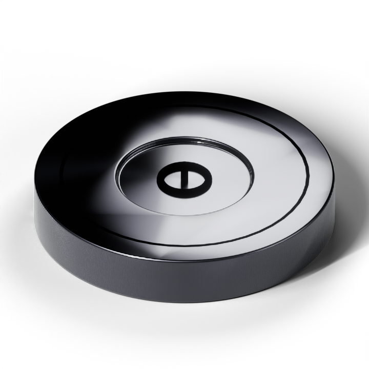
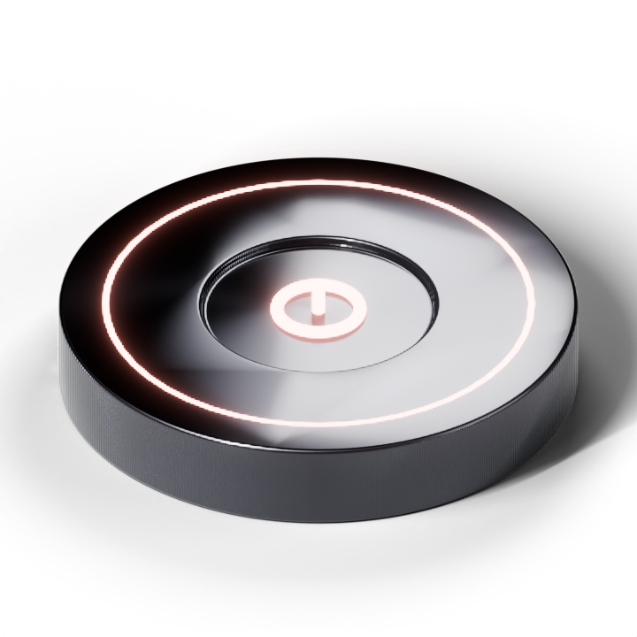
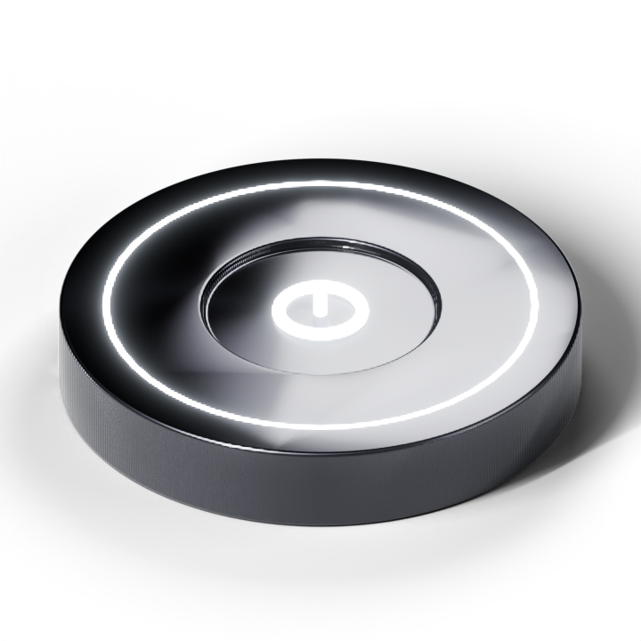
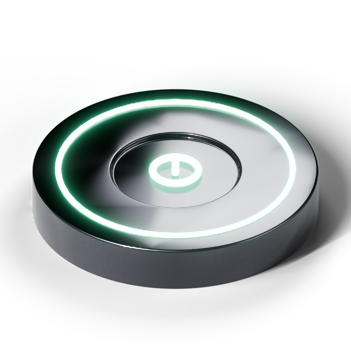

Launch
liveConnect a repo or drop your data
Runs




Online · Earning
tap to go offline
running · batch embed
Today
$3.18
Total
$1,284
Next payout
Jun 30
Throughput1.24k tok/s
MachineMac Studio · M2 Max
PayoutStripe
Payments
Agent · this Mac · full controls in the menu-bar app
Quiet hours · 10pm to 8am
Run on power only
Headroom · payout floor
Developer
GitHub
Override key
The device is the account · this overrides it with a specific buyer key, kept in this browser. For testing.
Theme